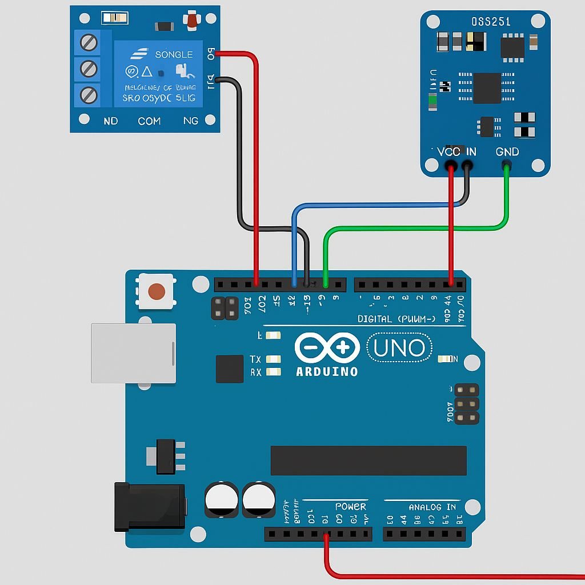
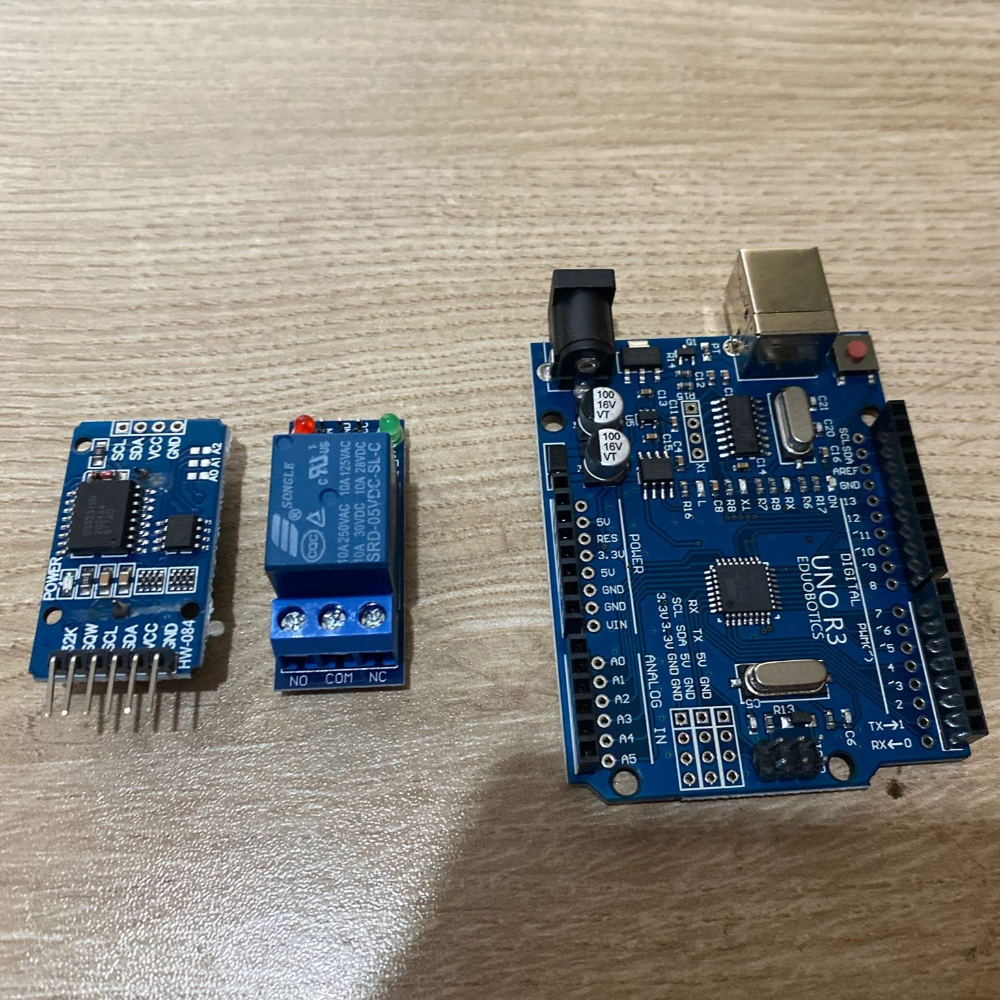

Neden yaptım?
Kuyudan su çeken motorun belirli saatlerde çalışmasını istedim. Motorun bağlantısına röle ekledim, zamanlama için de Arduino ve DS3231 saat modülü kullandım.
Nasıl çalışıyor?
Arduino, saat modülünden aldığı zamanı koddaki sulama saatiyle karşılaştırıyor. Saat geldiğinde röle çıkışı açılıyor, belirlenen süre sonunda kapanıyor. Sistem şu an yalnızca saate göre çalışıyor; toprak nemini ölçmüyor.
Adım adım
RTC modülü sistem kapalıyken bile zaman bilgisini korur.
Arduino yazılımı mevcut saat ile sulama zamanını karşılaştırır.
Uygun koşul oluştuğunda röle çıkışı aktif edilir.
Belirlenen süre sonunda sistem çıkışı kapatılır ve bekleme moduna döner.
Şu anki durum
Röleyi kuyu motorunun bağlantısında kullandım. Uzun süreli çalışmasını ayrıca kontrol etmem gerekiyor. Toprak nemi ve su seviyesi takibini henüz eklemedim.
Projede yaptıklarım
- DS3231 RTC modülü ile zaman bilgisinin okunması
- Belirlenen zamanda röle çıkışının kontrol edilmesi
- Kuyudan su çeken motorun röle üzerinden kontrolü
- Arduino C/C++ ile koşul tabanlı otomasyon algoritması
- Saat koşuluna göre açma ve kapama
Neler öğrendim?
Saat modülünden veri okumayı ve buna göre röleyi kontrol etmeyi uyguladım. Arduino’daki kodu motor bağlantısıyla birlikte kullanmış oldum.
Görseller


Notlarım
İleride toprak nem sensörü eklemek istiyorum. Böylece sulama yalnızca saate bağlı olmaz, toprağın durumuna göre de karar verebilir.
Sırada ne var?
- Toprak nem sensörü ile geri beslemeli sulama kontrolü
- Su deposu seviyesi takibi
- LCD veya OLED ekran ile anlık durum gösterimi
- Daha verimli ve güvenli güç yönetimi
- ESP32 ile kablosuz veri izleme